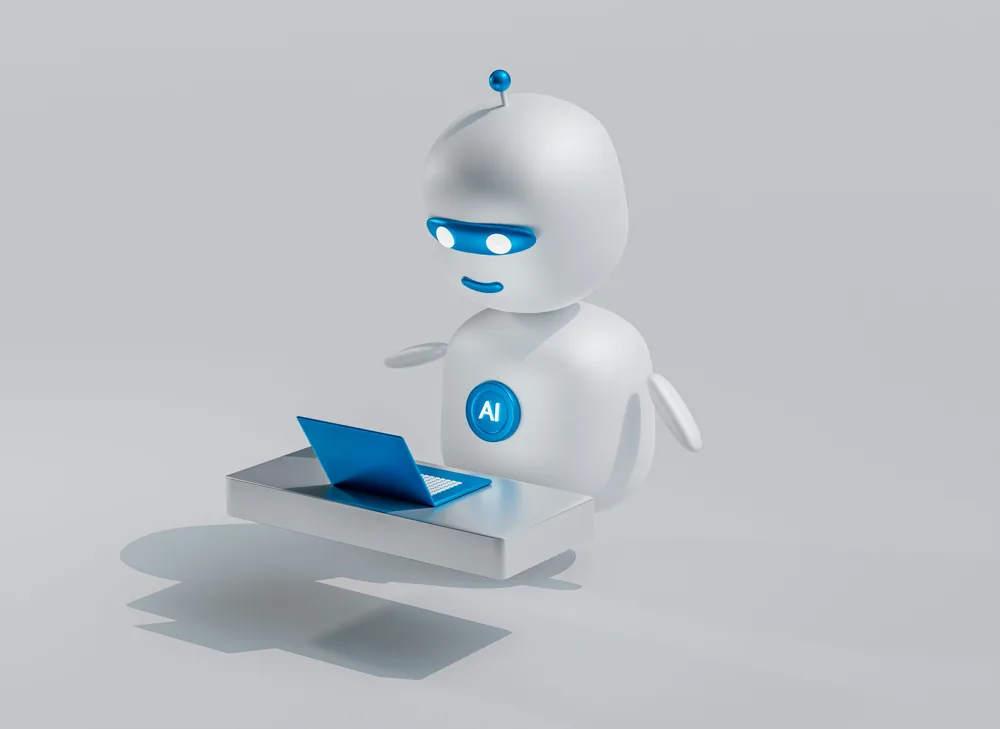
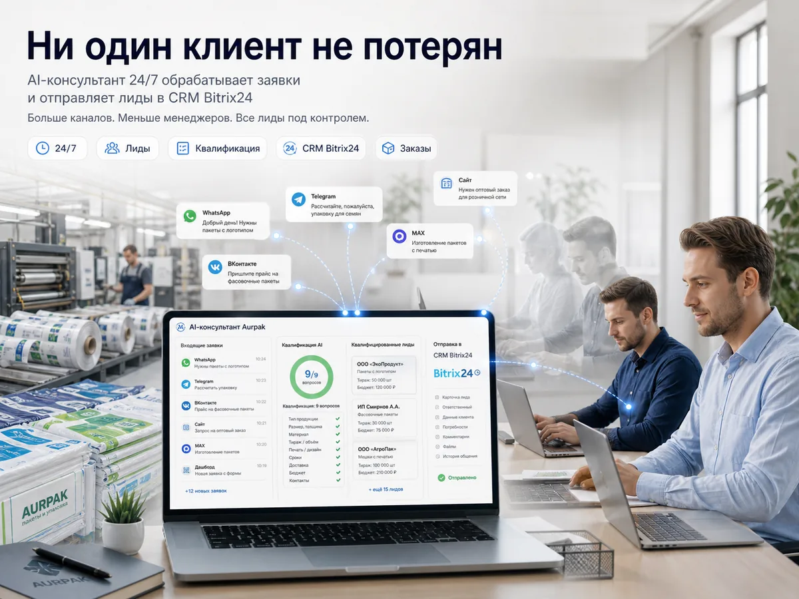

Боты и AI-помощники
Разговорные боты, которые реально стоят в бою: продают, квалифицируют лиды, ведут найм, записывают клиентов, консультируют и даже молятся вместе с людьми. Telegram, VK, MAX, WhatsApp, HH.ru, Avito — на n8n, LLM и своих базах знаний.

Нейросотрудник HR — AI-скрининг откликов
AI-рекрутёр сам ведёт переписку с кандидатами на HeadHunter: задаёт вопросы по чек-листу профессии, разбирает свободные ответы, отсеивает неподходящих и передаёт готовых рекрутёру с досье. Заменил год работы отдельного HR-сотрудника — без зарплаты и выходных.
- У HH нет вебхука на новое сообщение — переписка опрашивается поллингом с нарастающими интервалами.
- LLM-агент ведёт живой диалог: дозадаёт только незакрытые вопросы, ловит раздражение и отказы.
Ленремонт — AI-продажник в 10 каналах
Боевой ИИ-консультант по ремонту мебели: ведёт клиента до лида и передаёт менеджерам одновременно в Telegram, VK, MAX, WhatsApp, Avito и на сайте. Считает стоимость по прайсу, записывает на замер, понимает голос и фото — и не теряет ни одной заявки.
- Гейт владения диалогом и 3 заглушки по каналу — бот никогда не задевает поток живого оператора.
- Отказоустойчивость: ретраи, error-workflow возвращает диалог людям при сбое LLM, watchdog против OOM.

Аюрпак — AI-консультант для B2B-заявок
Telegram-бот для производителя упаковки: в диалоге консультирует по каталогу, квалифицирует оптового клиента (объём, позиция, сроки) и передаёт готовую заявку менеджеру в Bitrix24. Быстрый ответ 24/7 — ни один опт не уходит из-за того, что «не успели перезвонить».
- Квалификация оптовика по чек-листу (тип продукции, тираж, печать, сроки) прямо в диалоге.
- Многоканальный вход (WhatsApp, Telegram, VK, MAX, сайт) с передачей готового лида в CRM.
«День с молитвой» — Вырицкий молитвослов в Telegram и ВКонтакте
Бот ежедневной молитвенной практики: раздаёт тексты, аудио и фото по личному расписанию каждого пользователя, с учётом церковного календаря (Пасха, Троица), «вопрос батюшке», подача записок и пожертвования. Две зеркальные ветки — Telegram и VK.
Контроль платежей — напоминания о дебиторке
Система авто-напоминаний о долгах в Telegram и WhatsApp с оплатой в один клик прямо из уведомления. Отслеживает неоплаченные счета и дедлайны, эскалирует просрочку, показывает дашборд задолженности в реальном времени.
- Мультиканальные напоминания с гибкими сценариями по сегментам (новые/постоянные).
- Оплата прямо из уведомления + дашборд и отчётность по дебиторке в реальном времени.
Ещё боты в бою
Нажмите на карточку — откроется подробнее, не уходя со страницы.